文字
背景
行間

_
前期防災訓練
 8月30日(月)緊急事態宣言が続く中、学校が再開しました。本校においても分散登校・時差通学・短縮授業を実施するため、初日は１・３年生のみの登校となりました。朝のＳＨＲ時には放送にて学校長より「より緊張感をもって、感染対策の徹底を」と訓示がありました。本日は課題テスト・授業のあと、前期の防災訓練を行いました。猛暑対策・コロナ対策の観点から短時間で実施しました。今後の教育活動についても感染対策を十分に行い、実施方法を工夫しながら進めてまいります。
8月30日(月)緊急事態宣言が続く中、学校が再開しました。本校においても分散登校・時差通学・短縮授業を実施するため、初日は１・３年生のみの登校となりました。朝のＳＨＲ時には放送にて学校長より「より緊張感をもって、感染対策の徹底を」と訓示がありました。本日は課題テスト・授業のあと、前期の防災訓練を行いました。猛暑対策・コロナ対策の観点から短時間で実施しました。今後の教育活動についても感染対策を十分に行い、実施方法を工夫しながら進めてまいります。 第１・２回 学校説明会
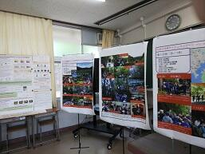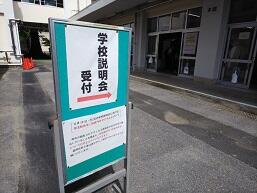

 令和３年度非常登庁訓練（佐倉市）が行われました。
令和３年度非常登庁訓練（佐倉市）が行われました。
本日８時半から、本校を会場に、佐倉市職員８名と本校職員２名（副校長、事務主幹）が参加して、
「令和３年度非常登庁訓練」が行われました。


情報伝達訓練、防災備蓄倉庫内点検、発電機稼働訓練、簡易ベッドとパーテーションの組立訓練、
特設公衆電話使用訓練、意見交換会等が行われました。
佐倉スイーツ開発プロジェクト


 小学校初任者研修「理科観察・実験実習研修」が行なわれました。
小学校初任者研修「理科観察・実験実習研修」が行なわれました。
「児童の関心・意欲を高める教材開発や実験操作の基本及び理科室の運営等について学ぶ。」
ことを目的に、小学校初任者研修「理科観察・実験実習研修」が行なわれました。


 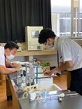 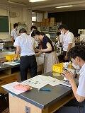
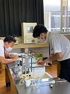 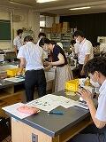 


北総教育事務所指導主事、県総合教育センター研究指導主事、成田市立大栄みらい学園教諭、成田市立美郷台小学校教諭、
本校からは西村教諭〔理科（生物）〕が講師として指導助言を行いました。
壮行会・賞状伝達式・留学生お別れの挨拶
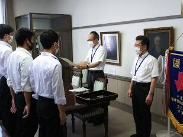
 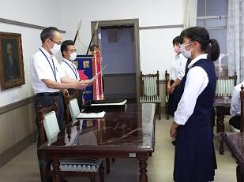
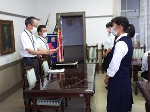 普通科探究学習の紹介
中学生の皆様へ 普通科探究学習（＝課題研究）の紹介
本校では、普通科・理数科の全生徒が課題研究に取り組んでいます。
理数系のSSHや国際交流を促進するSGHネットワーク、他にも三菱みらい育成財団の支援事業など、さまざまなプログラムに参加し、主体的な学び（受け身ではなく自ら切り開く学び）を体験しています。
Q なぜ、佐倉高校は課題研究に力を入れるのか？
A 大学、そして社会で必要とされる「課題を発見し解決する力」を育てるためです。
もちろん高校の学びだけで、上記の課題解決力が身につくとは思っていません。
よって普通科探究学習は「未来の種を蒔くSAKURA PUROJECT」と名付け、生涯へと続く学びの第一歩を目指しています。「学問を楽しむ」、この言葉の真の意味を課題研究を通し実感してください。
掲載写真は、7月実施の1・２学年課題研究の様子です。
現在、研究テーマを決定し、本やスマホで情報収集をしている段階です。
夏休みには、専門家へのインタビュー調査を行います。


スクールロイヤーによる人権講演会
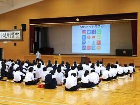


SGH有志 鍋山祭発表
鍋山祭に参加したSGH有志「Mass Disposal× Fashion（服の大量廃棄）」チームの紹介をしたいと思います。このチーム（現２年生）は、昨年度今回の企画名を課題研究テーマとし、１年間、調査＆発表を行いました。さらに具体的なアクションを起こそうと、現在進行型で取り組んでいます。春先から生徒に呼びかけ不要になった服を回収し、今回フリーマーケット形式でリユースの仲介を行いました。またその中の一部を組み合わせ、新しいファッション作品として提案しました。掲載した写真はその一部です。なお、製品化にあたってはオネスト企画株式会社様に多大なる協力をいただきました。ありがとうございました。
 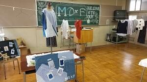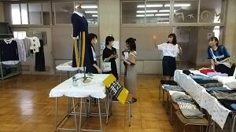
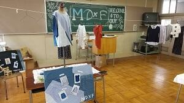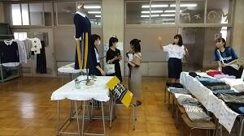
令和３年度 鍋山祭
受賞クラスは以下のとおりとなりました。
【鍋山大賞】 ３年Ｆ組 THE LION KING
【劇・映画・展示部門賞】 該当なし
【販売部門賞】 ２年Ｂ組 借りぐらしのArriettea
【アトラクション部門賞】 １年Ｆ組 紫色（しいろ）の脱出（エスケープ）
【部・同好会・有志大賞】 ダンス同好会 NEXUS 12th & 13th
【ステージ発表部門賞】 該当なし
【部・同好会・有志部門賞】 工芸・写真・華道部 轡的大陸＝ファイナル＝
【学校長特別賞】 ＳＧＨ有志 ﾌﾘｰﾏｰｹｯﾄ ～mass disposal×fashion～
生物部 甦りシモノ。～100年の時を超えた出会い～
国際交流委員会 世界うまいもの発見！
【装飾賞】 １年Ｅ組 いとだがし
２年Ａ組 mister A-nut
３年Ｆ組 THE LION KING
※前日準備から当日の様子です。
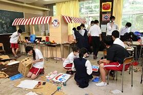
 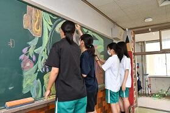
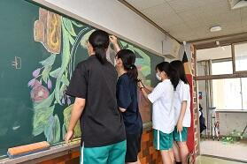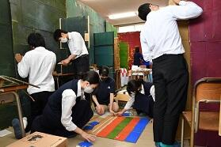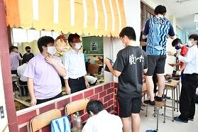
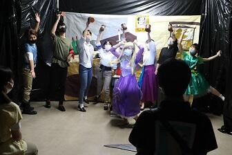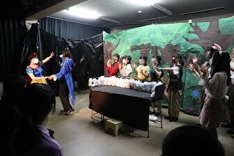


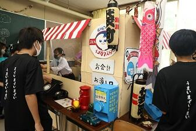

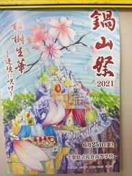
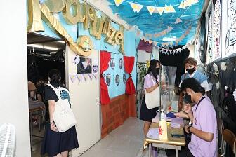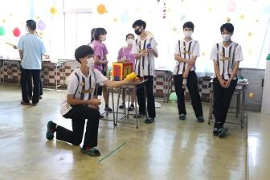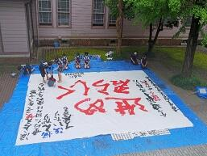
 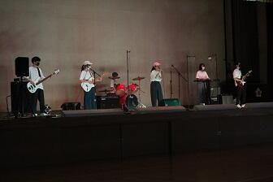
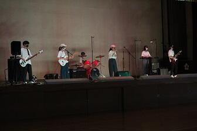第１回 開かれた学校づくり委員会
球技大会（第１回）
男子 ソフトボール ３年Ｈ組 女子 ドッジボール ３年Ｇ組
サッカー ３年Ｄ組 サッカー ３年Ｄ組
バレーボール ３年Ｅ組 バレーボール ３年Ｃ組
 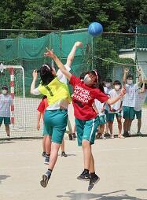
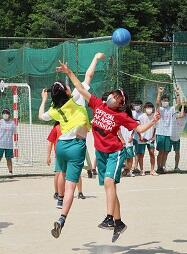


弓道部関東大会報告


6月5日（土）、第65回関東高等学校弓道大会が群馬県のALSOKぐんまアリーナで開催され、本校男子弓道部（島根・浅賀・遠藤・茂呂）が出場しました。結果は、24射中10的中と普段の実力を発揮できず、予選を通過することはできませんでした。大会は綿密な感染対策がなされ、無観客で実施されました。多くの大会関係者と鹿山会・PTA様はじめ、ご支援いただいた多くの方々に感謝し、次の大会に向けてまた精進を続けます。
オンライン生徒総会
東大ー佐倉オンライン「考える会」
5月30日、東大―佐倉オンライン「考える会」が開催されました。
参加者は、東京大学学生10名、本校生徒19名。参加者に上下はなく、対等な立場で知的対話をするのが目的です。Zoomのブレイクアウトルーム機能を使い、5部屋に分かれ対話が行われました。
事前に3つの対話テーマを設定し臨みました。
①夢に向かって頑張れ…とか、みんな言うけど、『夢』って、どうやって見つけるの？
②国民の求めるリーダー像もコロナ禍で変わった気がします。あなたは強いリーダーシップを望みますか、それとも･･･ 『理想のリーダー像』を論じてみませんか？
③『多様性』って流行り言葉だけど、解釈は人それぞれだよね。だって多様性だもの。でも、一度その定義をみんなで論じてみませんか？
いずれも答えのない問いです。思考力をフル活用し、スピーチを準備し、対話を繰り広げました。ファシリテーターも大学生に託し、ワンランク上の学問の世界を実感させていただきました。濃密な150分でした。
ある大学生から問いかけられた「多様性のパラドックス」を紹介します。
「ヘイトスピーチやLGBT否定派など、多様性を否定する人の多様性は守るべきか」
みなさんはどんな思考を組み立てますか、知の世界は深淵です。
１学年保護者対象進路講演会
エピペン・AED職員研修

2・３年保護者対象進路講演会
なお、同日実施が予定されていたＰＴＡ総会は中止とし、書面での開催とさせていただきました。
弓道部男子団体関東大会出場決定
4月24日(土)・25日(日)に千葉県総合スポーツセンターで行われた関東高等学校弓道大会千葉県予選において、男子団体が4位に入賞し、４年ぶりの関東大会出場を決めました。関東大会は６月４日・５日・６日に群馬県前橋市で開催されます。コロナ禍で活動にも様々な制約がありますが、更なる高みを目指して、ベストを尽くします。応援よろしくお願いします。
日本学生支援機構の予約採用に関する連絡（卒業生）
日本学生支援機構の予約採用に関する連絡（卒業生）情報を更新しました。
教育相談職員研修
令和３年度入学式


Sakur Art(佐倉高校文化系部活動合同作品展)


3月19日(金)～22日(月) 11:00～16:00 Sakur Art 展（美術部・書道部・華道部・工芸部・写真部の合同作品展）が開催されました。また、音楽部の映像による発表も同時に行われました。この催しは平成25年度に始まり、今年で第８回を迎えます。例年はＤＩＣ川村記念美術館のギャラリーをお借りして実施し、多くの来場者にお越しいただいていましたが、今年は本校の地域交流施設での開催となりました。新型コロナ感染症拡大防止のため、来場者を生徒・保護者に限定しましたが、200名を超える来客があり、芸術部活動として貴重な発表の機会を得ることができました。コロナ禍が収束するまで、文化系部活動も様々な制約を受けますが、今後も良い作品作りを目指して精進してまいります。ご来場本当にありがとうございました。
後期終業式
3月24日(水)感染症防止のため後期終業式は放送で行われました。その後、応接室にて賞状伝達が行われました。今回の表彰は以下のとおりです。
美術部 第65回全日本学生美術展覧会 佳作２名 入選５名
生物部 千葉県高等学校文化連盟自然科学専門部会 研究奨励賞 ４名
書道部 第73回千葉県小中高校書き初め展覧会 千葉県議会議長賞 １名
受験報告会

3月22日(月)9:30～11:00 この3月に卒業した卒業生10名(理系5名・文系5名)を招いて受験報告会を実施しました。理系志望の1・2年生は体育館、文系志望の2年生は第2体育館、文系志望の1年生は新型コロナウィルス感染症対策のため、指定教室で第2体育館の様子をリモートで視聴という形式で行われました。大きな変革があった大学入試を乗り越えた卒業生からは、志望校や併願校の決定や勉強方法について重みのある体験談を聞くことができ、有意義な時間を過ごすことができました。会が終わっても、進路室に多くの在校生が訪れ、卒業生に積極的に質問している光景がみられました。
第73回卒業証書授与式

令和3年3月9日(火) 第73回卒業証書授与式が無事に挙行され、323名の卒業生を送り出しました。新型コロナウィルス感染症防止のため、在校生、保護者、同窓会や地域の方々にはご理解とご協力をいただき、心より感謝申し上げます。学校長からは「木は規に依って直く、人は人に依って賢し」という言葉が贈られ、情報化が進むこの時代に、ただ情報を受け取るだけでなく、多様な観点から、人と意見を交え、咀嚼し考えていくことが大切だと述べられました。また、「学びて思わざれば即ち罔（くら）し」という言葉とともに自分で考えることの大切さ、人の教えを受けることの大切さを述べられ、上級学校においても「良き学び」を続けてほしいというメッセージが贈られました。生徒代表として第７２代生徒会長からは「大学入試の大きな変革があったこの大変な年にコロナ禍に見舞われ、休校・学校行事の中止、部活動の最後の大会の中止など、様々な困難を経験してきた自分たちには、これからの困難を乗り切る力がある」という言葉とともに、3年間を共に過ごした仲間や先生たちへの感謝を込めた熱いメッセージが贈られました。
３２３名の卒業生のみなさんの今後のご活躍とご多幸を心よりお祈りいたします。
令和2年度後期防災避難訓練
1学年は、備蓄関係の資料と校内救助袋（緊急時避難シューター）の資料の確認と
2学年は、グラウンドへの避難と消火器による消火訓練が行われました。
避難はスムースに行われ、消火訓練も生徒・職員も含め真剣に行われました。
3学年保護者進路説明会
予備校からの昨年度入試に関する倍率等の動向や、今年の各大学の変更点等注意する点等が説明されました。また、進路指導部からの受験に係る留意点、3学年主任からは生徒の状況報告等が行われました。寒い中、体育館での実施となりましたが、御参加ありがとうございました。
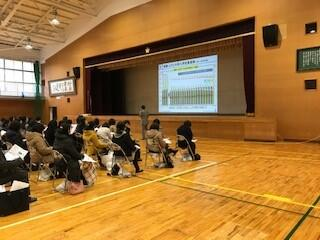
3学年進路説明会・出願指導
昨年度入試に関する倍率等の動向や、今年の各大学の変更点等が説明され生徒も真剣な表情で聞いていました。
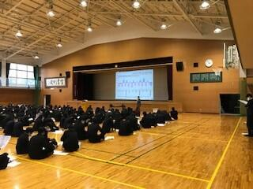
高校生向け出前講座「せんせいっていいもんだ」
 11月19日(木) 現在佐倉市の小学校でご活躍中の本校卒業生の方と、教職員課の先生をお招きして、高校生向け出前講座「せんせいっていいもんだ」を実施しました。教師の仕事に関心のある１年生約20名が聴講しました。教職員課からは「千葉県教員になるには」ということで、県教育委員会の取組を含めて具体的な話を聴くことができました。本校卒業生の方からは、具体的な仕事内容や教師の魅力などについて、後輩たちに向けての熱いメッセージとともにお話をいただきました。最後には生徒たちから活発な質問も寄せられ、60分の時間が短く感じられる有意義な時間を過ごすことができました。
11月19日(木) 現在佐倉市の小学校でご活躍中の本校卒業生の方と、教職員課の先生をお招きして、高校生向け出前講座「せんせいっていいもんだ」を実施しました。教師の仕事に関心のある１年生約20名が聴講しました。教職員課からは「千葉県教員になるには」ということで、県教育委員会の取組を含めて具体的な話を聴くことができました。本校卒業生の方からは、具体的な仕事内容や教師の魅力などについて、後輩たちに向けての熱いメッセージとともにお話をいただきました。最後には生徒たちから活発な質問も寄せられ、60分の時間が短く感じられる有意義な時間を過ごすことができました。
弓道部 県新人大会男子団体第4位
また個人の部では、男子・田坂さん（２年）が６位に入賞しました。
第３回学校説明会


1・2年保護者対象進路説明会及び2年保護者対象修学旅行説明会


令和２年度 球技大会
【男子バレーボール】３年Ｆ組ａ 【女子バレーボール】２年Ｃ組
【男子サッカー】 ３年Ｂ組 【女子サッカー】 ３年Ｂ組ａ
【ハンドボール】 ３年Ｃ組 【ドッジボール】 ３年Ｅ組
令和２年度地域交流懇談会（1000ヶ所ミニ集会）
大学模擬授業


生徒会役員選挙


ようこそ先輩 ～僕の大学・私の大学～
令和3年度大学入学共通テスト出願説明会


第２回学校説明会
前期防災訓練
第１回学校説明会

令和２年度児童・生徒の理科離れ対策事業
３密を避けるため午前１５人午後１５名の入れ替え制で行われ、昨年と比べるとやや寂しい感じがしましたが、距離をとるためでやむを得ないところです。顕微鏡の使い方等実験操作の基本と安全指導、模擬授業を通しての安全指導、サテライト研究員との意見交換などが熱心に行われました。
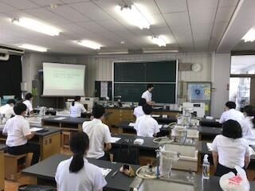
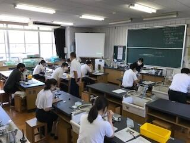
令和2年度 理数科 口頭発表会
3年生が、各グループに毎に、2年生3年生の前で発表です。今回は、三密を避けるために1年生は、参加しませんでした。1年生は、教室で録画した動画を1時間遅れで見ました。3年生の皆さんは、今までの課題研究の成果を堂々と発表しました。2年生からの質問には熱心にかつ丁寧に応えていました。
【発表テーマ一覧】
・蓑から学ぶエコな雨合羽 ・キュウリの果肉による発芽抑制物質を突き止める
・米におけるメーラード反応の防止方法
・集音レンズを用いた新たな通信機器の開発 ・ 溶けないアイス
・透明標本における硬骨染色剤の代用 ・ 導管の走行に関する考察
・藍抜染における糖類の効果 ・ 泥はね
・ウズラ卵の模様についての考察 ・ 構造による防音性能
・濃硝酸と銅を加えて二酸化炭素を発生させる実験での液色の変化
・アサリと光の反応について ・アナタカラダニ類の行動について
・ 陽極酸化法による酸化ビスマス薄膜形成とその干渉色に及ぼす電解条件の影響

令和３年度入学者選抜について
左上の「中学生の皆さんへ」の「入学者選抜について」の中に選抜・評価方法を掲載いたしました。
県教委によるICT活用実態視察


校内授業研修週間
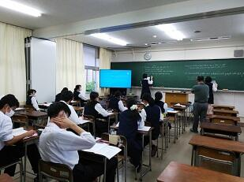


第１回開かれた学校づくり委員会
 日、地元中学校や京成佐倉駅、自治会代表の方、PTA、同窓会の方などをお招きし「第１回開かれた学校づくり委員会」が開催されました。授業見学、SGH・SSHなどの取組の説明の後、佐倉高校に対する期待や地域との連携について意見交換をしました。
日、地元中学校や京成佐倉駅、自治会代表の方、PTA、同窓会の方などをお招きし「第１回開かれた学校づくり委員会」が開催されました。授業見学、SGH・SSHなどの取組の説明の後、佐倉高校に対する期待や地域との連携について意見交換をしました。 日本学生支援機構奨学金の予約採用申し込みについて
◇卒業生について
［配布期間］
期日 ： 7月1日（水）～7月8日（水） 場所 ： 進路室
［入力締め切り日］
7月21日（火）までに入力をお願いします。
※ 申し込み者の入力が終了しないと学校での情報入力が完了できません。
※ 申し込み者の入力、学校側の入力の両方が完了しないと申し込みが完了
したことになりません。
［書類提出期間］
期日 ： 7月30日（木）必着 方法：郵送又は持参
※ 自宅での入力をお願いします。
※ 書類配布の時にパスワード等をお知らせします。
※ 在校生・卒業生分をとりまとめ、一括で発送する都合上、期間内に必要
書類が届かない場合は申し込みできません。
学校再開